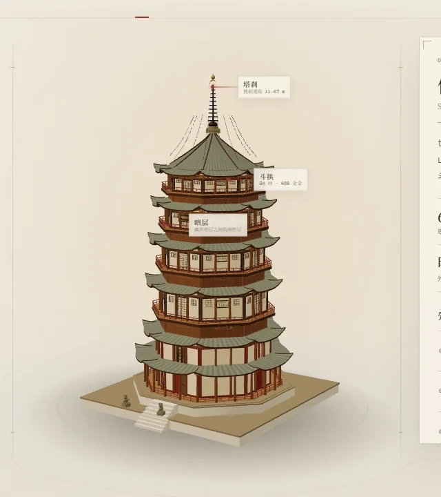
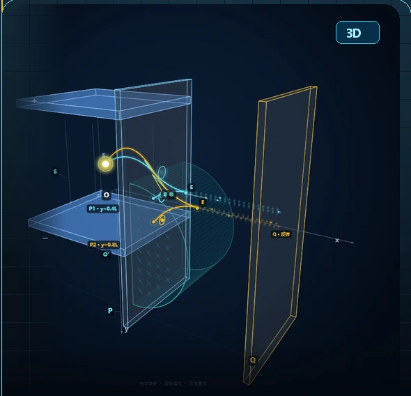

先拆开 DECONSTRUCT
看到一个东西，先想知道它怎么运转。
我是孟子皓，20 岁，一个会为一块开发板熬夜，也会为一束光停下来的标准理工男。用代码、焊台和镜头拆解世界，也在神话与道教文化里，寻找另一种答案。
把想象，变成可以运行的东西。
我今年 20 岁，在天津大学电气自动化与信息工程学院读大一。喜欢把东西拆开，研究它为什么能工作；更享受把它重新装回去时，让它多出一点原来说明书里没有的功能。
单片机、人工智能、三维建模和独立游戏，是我和「造物」相处的四种方式；摄影、剪辑、神话与道教文化，则是我理解世界、安放想象的方式。理性和浪漫并不冲突——它们只是同一套系统里，两条互相校准的信号。
看到一个东西，先想知道它怎么运转。
让想法通电，变成能看见、能触摸的结果。
给未知留位置，答案才有继续生长的可能。
从硬件到神话，这些坐标共同构成了我。它们不是并列的技能清单，而是八种看世界的焦距——点开任意一个，看看它在我这里意味着什么。
✳ 八个坐标，不是八种人设；它们只是我看世界的八种焦距。 TJU · EAIE / 20
写代码时，世界是可被拆解的；读神话时，世界又恢复成一片留白。这两种视角，在我这里不是对立，而是彼此的补光。
工程训练我把问题变成模块，寻找因果与边界；道教文化和神话让我看到尺度、变化与不可穷尽。器，是手中的方法；道，是心里的尺度。
形而上者谓之道，《周易 · 系辞上》
形而下者谓之器。
while (curious) {
build();
question();
}
点击右侧八卦中的任意一卦，看看古老的目光如何照进今天的工程问题。
QIAN · 创造
从无到有，先把东西做出来。世界不会因为一个想法改变，但会被一个原型轻轻推动。
游戏原型 · 硬件立项 · 从 0 到 1
— 这里没有占卜，只借八种古老的目光，重新看一次手里的问题。
应县木塔，本名佛宫寺释迦塔。辽清宁二年（1056）建于山西应州，通高 67.31 米，外观五层、内里九层，没有一颗铁钉。把台基、柱网、斗拱、暗层与塔刹重新搭进一个可以旋转、分解、剖视的空间。

LIVE 3D ARCHIVE 01 MODEL / YX-1056 DRAG · EXPLODE · SECTION有些物理过程，写满公式也很难真正「看见」。于是我把高考压轴题做成可以旋转、调参和播放的三维讲解——让抽象条件变成空间里的轨迹。

LIVE 3D EP. 01 SIMULATION / 001 DRAG · SCALE · TUNE这是一个还在加载中的人。接下来，我想把单片机做进真实的物件里，把 AI 变成好用的工具，把脑海里的世界做成可以玩的游戏；也想继续用镜头和文字，记录那些值得被记住的光。
如果你想聊硬件、AI、游戏、影像，或者神话与道教文化，欢迎找到我。我们总会在某个有趣的地方相遇。